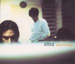

Home Artist links Label link

Attica - You Are In Danger
| Artist: | Attica |
| Title: | You Are In Danger |
| Label: | Carbon 7 C7-066 |
| Length(s): | 60 minutes |
| Year(s) of release: | 2004 |
| Month of review: | [09/2004] |
Line up
Amaury Massion - lead vocals, trumpet, fluegelhorn
Gilles Mortiaux - electric guitar, analog synths, backing vocals
Max Gendebien - electric & acoustic guitar
Cyrille de Haes - fender bass & double bass
Colin De Bruyne - drums, backing vocals
Tracks
| 1) | Wake Up | 6.18
|
| 2) | Sweet Rain | 4.12
|
| 3) | Sober Blues | 7.15
|
| 4) | Urban Fields | 4.24
|
| 5) | Monsoon Girl | 5.20
|
| 6) | Riverman | 4.30
|
| 7) | Telefascination | 4.37
|
| 8) | Funny Time | 3.32
|
| 9) | Black & White | 2.45
|
| 10) | Love Is Real | 3.42
|
| 11) | 127 Bis | 2.14
|
| 12) | Perfect Bubble | 5.28
|
| 13) | Alles Wandelt Sich | 5.05
|
Summary
The music
The music of Attica is of a very melancholic kind. Massion's voice reminds strongly of Jeff Buckley's, in an almost eerie way. The compositions move in the same direction, although there's a bit of a ghost of such Belgian bands as The Same and dEUS. But there similarities with such modern fringe progressive acts as Product, Gazpacho and Circles End as well.
The band use a lot of acoustic instruments, although they do use ample electricity. The compositions are pretty much song oriented (as opposed to epic oriented), built around vocals and guitar. The other instruments are less dominating, although their detail helps a great deal in creating intricate compositions. Through the use of instruments they introduce both rock oriented and jazz related influences.
Massion's emotional and strong voice is definitely an asset, carrying the weight of the compositions.
Conclusion
When I heard Buckley's posthumous release Songs For My Sweetheart The Drunk I was disappointed with the quality of the material. Now hearing this album I feel we have gotten the quality release now I was hoping we'd get then. Of course, a statement like this can hardly be considered a plea for an album's originality. Having said that, these tracks aren't pure Buckley, and they do stand on themselves quite handsomely, especially if you consider that this is a bit of a Belgian take on the musical vein. Good stuff by Attica.
© Roberto Lambooy